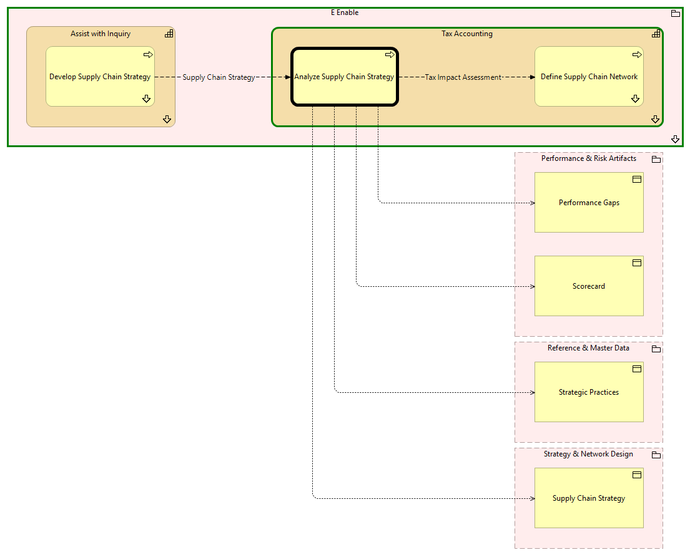

Analyze Supply Chain Strategy - Context
(
)

generated_by
build_archi_xml.py::gen_proc_node_context_view
generator_path
pedro/capabilities/build_archi_xml_assign/build_archi_xml_assign.py
run_at
2026-10-10T17:56:28
view_type
process_context
E Enable
Tax Accounting
Analyze Supply Chain Strategy
Define Supply Chain Network
Define Supply Chain Network - Context
Tax Accounting - Processes
Assist with Inquiry
Develop Supply Chain Strategy
Develop Supply Chain Strategy - Context
Assist with Inquiry - Processes
E Enable - Processes
Performance & Risk Artifacts
Scorecard
Performance Gaps
Reference & Master Data
Strategic Practices
Strategy & Network Design
Supply Chain Strategy
Tax Impact Assessment
Analyze Supply Chain Strategy
Define Supply Chain Network
Analyze Supply Chain Strategy
Scorecard
Analyze Supply Chain Strategy
Performance Gaps
Analyze Supply Chain Strategy
Strategic Practices
Analyze Supply Chain Strategy
Supply Chain Strategy
Supply Chain Strategy
Develop Supply Chain Strategy
Analyze Supply Chain Strategy